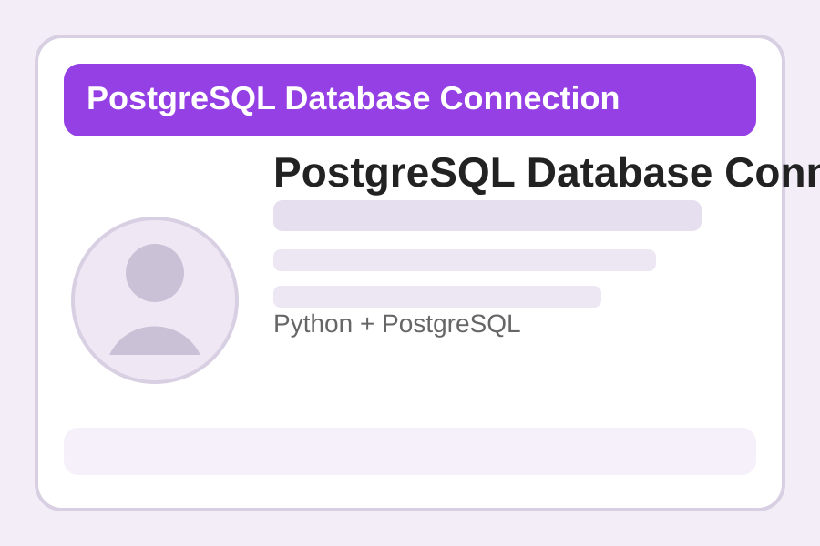
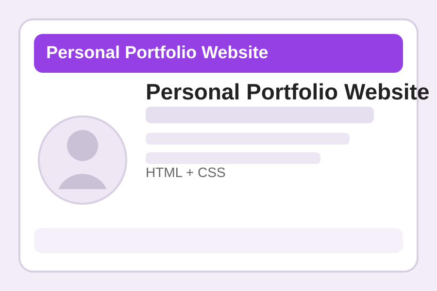
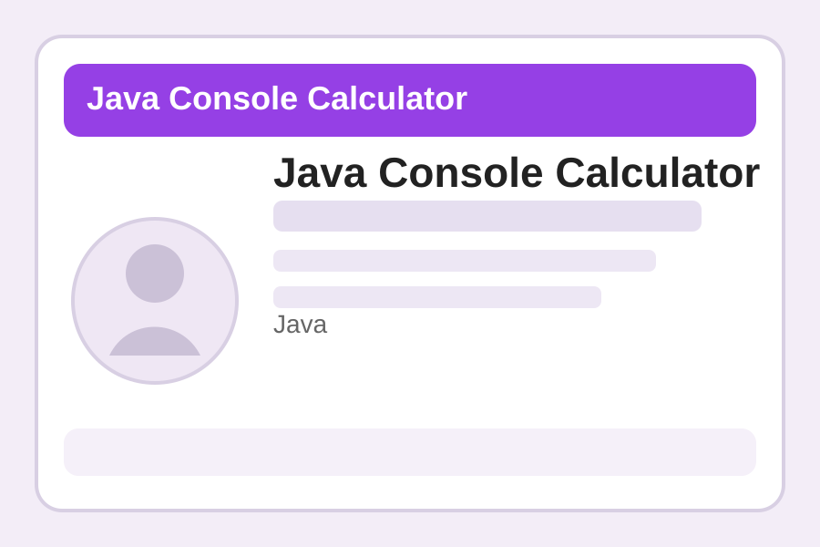
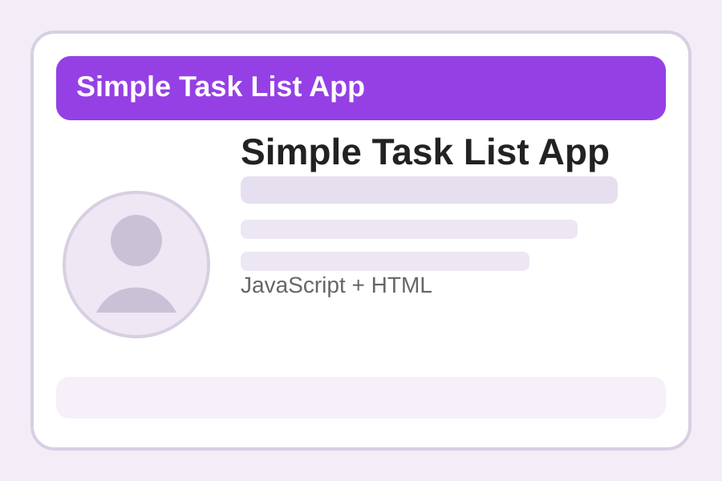

PostgreSQL Database Connection
Programa en Python que establece conexión con una base de datos PostgreSQL y realiza consultas básicas.
Ver proyectoSelección de proyectos de nivel básico que representan mi proceso de aprendizaje en programación, bases de datos y desarrollo web.

Programa en Python que establece conexión con una base de datos PostgreSQL y realiza consultas básicas.
Ver proyecto
Sitio estático para presentar perfil, proyectos y medios de contacto usando estructura web organizada.
Ver proyecto
Aplicación de consola que realiza operaciones aritméticas básicas y refuerza el uso de métodos y variables.
Ver proyecto
Proyecto básico de JavaScript para agregar y eliminar tareas dentro de una lista dinámica en el navegador.
Ver proyecto| Tecnología | Nivel de experiencia (1-5) | Años de experiencia |
|---|---|---|
| HTML | 3 | 1 |
| CSS | 3 | 1 |
| JavaScript | 2 | 1 |
| Python | 3 | 1 |
| Java | 2 | 1 |
| PostgreSQL | 2 | 1 |